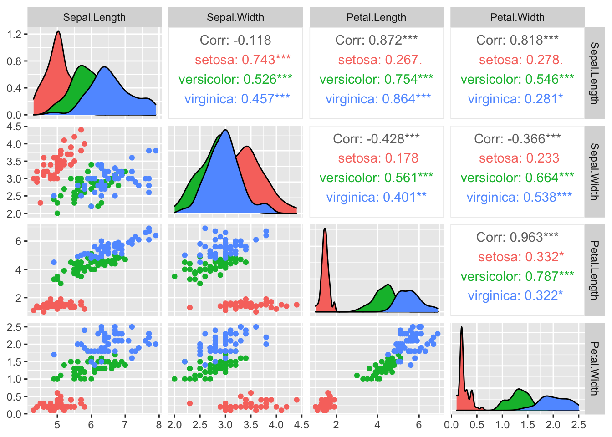
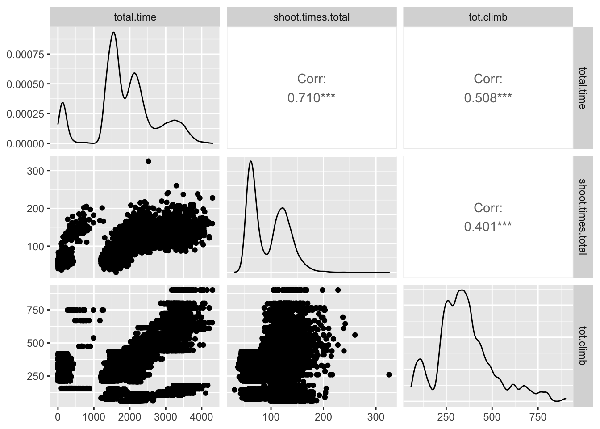
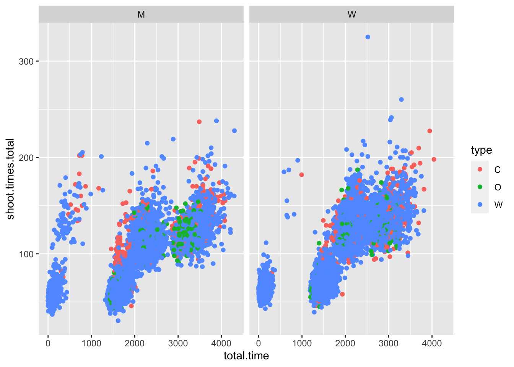
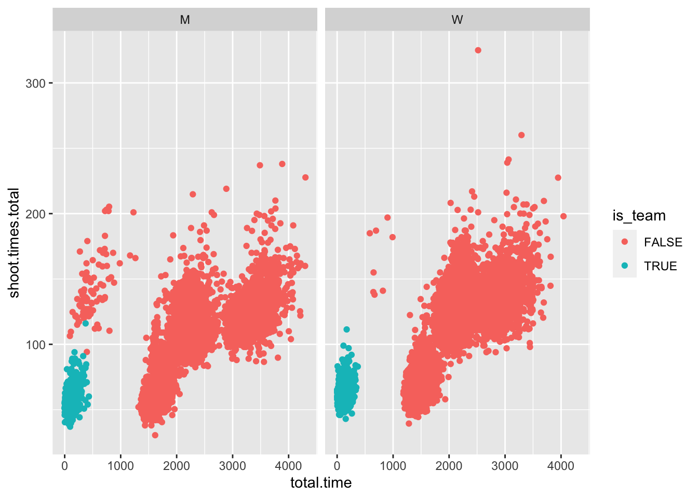

8 Maschinelles Lernen / Data Mining
=> Lösen von Klassifikationsproblemen
8.1 Import all packages
8.2 Datensatz einlesen
head(iris)## Sepal.Length Sepal.Width Petal.Length Petal.Width
## 1 5.1 3.5 1.4 0.2
## 2 4.9 3.0 1.4 0.2
## 3 4.7 3.2 1.3 0.2
## 4 4.6 3.1 1.5 0.2
## 5 5.0 3.6 1.4 0.2
## 6 5.4 3.9 1.7 0.4
## Species
## 1 setosa
## 2 setosa
## 3 setosa
## 4 setosa
## 5 setosa
## 6 setosast_iris <- as.data.frame(scale(iris[,-5]))
st_iris <- tibble(st_iris) %>%
add_column(Species = iris$Species)8.2.1 Beschreibung
## Sepal.Length Sepal.Width Petal.Length
## median 5.80000000 3.00000000 4.3500000
## mean 5.84333333 3.05733333 3.7580000
## SE.mean 0.06761132 0.03558833 0.1441360
## CI.mean.0.95 0.13360085 0.07032302 0.2848146
## var 0.68569351 0.18997942 3.1162779
## std.dev 0.82806613 0.43586628 1.7652982
## coef.var 0.14171126 0.14256420 0.4697441
## Petal.Width Species
## median 1.30000000 NA
## mean 1.19933333 NA
## SE.mean 0.06223645 NA
## CI.mean.0.95 0.12298004 NA
## var 0.58100626 NA
## std.dev 0.76223767 NA
## coef.var 0.63555114 NA8.2.2 Visualisieren
## plot: [1,1] [=>------------------------] 6% est: 0s
## plot: [1,2] [==>-----------------------] 12% est: 1s
## plot: [1,3] [====>---------------------] 19% est: 1s
## plot: [1,4] [=====>--------------------] 25% est: 1s
## plot: [2,1] [=======>------------------] 31% est: 1s
## plot: [2,2] [=========>----------------] 38% est: 1s
## plot: [2,3] [==========>---------------] 44% est: 0s
## plot: [2,4] [============>-------------] 50% est: 0s
## plot: [3,1] [==============>-----------] 56% est: 0s
## plot: [3,2] [===============>----------] 62% est: 0s
## plot: [3,3] [=================>--------] 69% est: 0s
## plot: [3,4] [===================>------] 75% est: 0s
## plot: [4,1] [====================>-----] 81% est: 0s
## plot: [4,2] [======================>---] 88% est: 0s
## plot: [4,3] [=======================>--] 94% est: 0s
## plot: [4,4] [==========================]100% est: 0s
8.3 Lineare Diskriminanzanalyse
8.3.1 Test / Train
train <- sample(1:nrow(st_iris), 0.75*nrow(st_iris)) # 75 % fürs testen
train_set <- st_iris[train,]
test_set <- st_iris[-train,]8.3.2 Modelltrainierung
lda_train <- lda(Species ~. , data = train_set)
train_pred <- predict(lda_train, train_set)$class
table(train_pred, train_set$Species)##
## train_pred setosa versicolor virginica
## setosa 36 0 0
## versicolor 0 36 1
## virginica 0 2 378.3.3 Bewertung anhand der Testdaten
test_pred <- predict(lda_train, test_set)$class
table(test_pred, test_set$Species)##
## test_pred setosa versicolor virginica
## setosa 14 0 0
## versicolor 0 12 0
## virginica 0 0 128.4 Random Forest Methode
8.4.1 Bildung mehrerer Entscheidungsbäume
#wiederholung der Train-Test-Sets
train <- sample(1:nrow(st_iris), 0.75*nrow(st_iris)) # 75 % fürs testen
train_set <- st_iris[train,]
test_set <- st_iris[-train,]
rf1 <- randomForest(
Species ~ .,
data = train_set,
ntree = 100,
mtry = 2,
importance = T,
proximity = T
)
rf1##
## Call:
## randomForest(formula = Species ~ ., data = train_set, ntree = 100, mtry = 2, importance = T, proximity = T)
## Type of random forest: classification
## Number of trees: 100
## No. of variables tried at each split: 2
##
## OOB estimate of error rate: 8.04%
## Confusion matrix:
## setosa versicolor virginica class.error
## setosa 36 0 0 0.0000000
## versicolor 0 31 4 0.1142857
## virginica 0 5 36 0.1219512train_predict <- predict(rf1, train_set[,-5], type = "response")
table(train_predict, train_set$Species)##
## train_predict setosa versicolor virginica
## setosa 36 0 0
## versicolor 0 35 0
## virginica 0 0 41test_predict <- predict(rf1, test_set[,-5], type = "response")
table(test_predict, test_set$Species)##
## test_predict setosa versicolor virginica
## setosa 14 0 0
## versicolor 0 15 1
## virginica 0 0 88.5 Neuronales Netzwerk
8.5.1 Standardisierung und Aufteilung der Daten
st_iris[,5] <- as.numeric(iris$Species) -1
st_iris <- as.matrix(st_iris)
train_set <- st_iris[train,-5]
test_set <- st_iris[-train,-5]8.5.2 Trainieren des Neuronalen Netzwerks
8.5.3 Evaluation
score <- dl %>%
evaluate(test_set, test_settarget, batch_size = 128)
print(score)## loss accuracy
## 0.03793639 1.00000000# class <- predict_classes(dl, test_set) #decepretated
class <- dl %>% predict(test_set) %>% k_argmax()
class_numeric <- as.numeric(class)
table(as.numeric(class), st_iris[-train,5])##
## 0 1 2
## 0 14 0 0
## 1 0 15 0
## 2 0 0 98.6 H20
Internetverbundenes Packet, basierend auf JAVA!!
ich werde es nicht herunterladen, deswegen nur den ersten Block mitgeschrieben
localH20 = h2o.init(
ip = "localhost",
port = 54321,
startH2O = T,
nthreads = -1,
max_mem_size = "2G"
)8.7 Aufgabenblatt
library(tidyverse)
library(GGally)
library(pastecs)load("data/biathlon4.RData")
load("data/biathlon3.RData")a) Betrachten Sie zunächst alle Variablen im Datensatz und analysieren Sie diese hinsichtlich Ihrer Lage und Streuung. Lassen sich irgendwelche Auffälligkeiten feststellen? Wenn ja sollten Sie überlegen, wie Sie diese bereinigen bzw. beseitigen könnten.
test %>%
dplyr::select(c(total.time, shoot.times.total, fails.total, type)) %>%
stat.desc(basic = F) ## total.time shoot.times.total fails.total
## median 1.808850e+03 92.0000000 2.00000000
## mean 1.893898e+03 95.6011581 2.81648027
## SE.mean 7.487072e+00 0.3059346 0.01727304
## CI.mean.0.95 1.467577e+01 0.5996773 0.03385772
## var 7.217802e+05 1204.2060904 3.84165770
## std.dev 8.495765e+02 34.7016727 1.96001472
## coef.var 4.485861e-01 0.3629838 0.69590927
## type
## median NA
## mean NA
## SE.mean NA
## CI.mean.0.95 NA
## var NA
## std.dev NA
## coef.var NAtest %>%
dplyr::select(c(total.time, shoot.times.total, tot.climb)) %>%
ggpairs()## Warning in ggally_statistic(data = data, mapping =
## mapping, na.rm = na.rm, : Removed 10 rows containing
## missing values## Warning in ggally_statistic(data = data, mapping =
## mapping, na.rm = na.rm, : Removed 57 rows containing
## missing values## Warning: Removed 10 rows containing missing values
## (geom_point).## Warning: Removed 10 rows containing non-finite values
## (stat_density).## Warning in ggally_statistic(data = data, mapping =
## mapping, na.rm = na.rm, : Removed 67 rows containing
## missing values## Warning: Removed 57 rows containing missing values
## (geom_point).## Warning: Removed 67 rows containing missing values
## (geom_point).## Warning: Removed 57 rows containing non-finite values
## (stat_density).
test %>%
ggplot(aes(x = total.time, y = shoot.times.total, color = type)) +
geom_point() +
facet_wrap(~gender)## Warning: Removed 10 rows containing missing values
## (geom_point).
Komisch: bei letzem Graphen erkennbar eine kleine Gruppe mit niedrigen Zeiten, unabhängig vom Rest des Feldes
vielleicht abhängig von Teamsachen
test$is_team <- grepl("[0-9]", test$nation) #checks if there are any numbers in nation name, a sign for a team base
test %>%
ggplot(aes(x = total.time, y = shoot.times.total, color = is_team)) +
geom_point() +
facet_grid(~gender)## Warning: Removed 10 rows containing missing values
## (geom_point).
funktioniert so ein bisschen, nicht komplett, aber egal.
8.7.1 Filtern + Standardisieren des Datensatzes
welche Variable wollen wir erkennen lassen ?
colnames(test)## [1] "nation" "gender"
## [3] "type" "total.time"
## [5] "course.lap.1" "course.lap.2"
## [7] "course.lap.3" "course.lap.4"
## [9] "course.lap.5" "course.total"
## [11] "shoot.times.1" "shoot.times.2"
## [13] "shoot.times.3" "shoot.times.4"
## [15] "shoot.times.total" "fails.1"
## [17] "fails.2" "fails.3"
## [19] "fails.4" "fails.total"
## [21] "max.climb" "tot.climb"
## [23] "height.diff" "is_team"Datensatz extrahierung
st_test <- test %>%
dplyr::select(total.time, course.total, shoot.times.total, height.diff) %>%
scale()
st_train <- train %>%
dplyr::select(total.time, course.total, shoot.times.total, height.diff) %>%
scale()